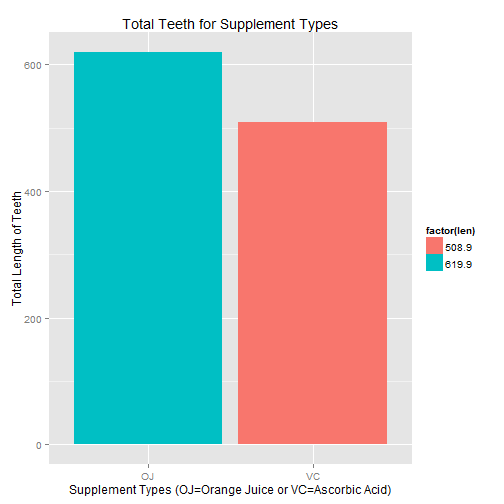
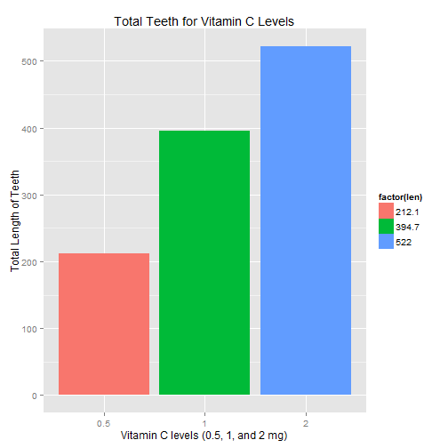

#-------------------------------------------------------------------------------
#-------------------------------------------------------------------------------
In this project we're going to analyze the ToothGrowth data in the R datasets package.
# load the datasets package available in R
library(datasets)
#check the data available in the ToothGrowth
head(ToothGrowth)
## len supp dose
## 1 4.2 VC 0.5
## 2 11.5 VC 0.5
## 3 7.3 VC 0.5
## 4 5.8 VC 0.5
## 5 6.4 VC 0.5
## 6 10.0 VC 0.5
Here we are analyzing The Effect of Vitamin C on Tooth Growth in Guinea Pigs. If you need to read more details about the ToothGrowth data it is available here https://stat.ethz.ch/R-manual/R-devel/library/datasets/html/ToothGrowth.html
The response is the length of odontoblasts (teeth) in each of 10 guinea pigs at each of three dose levels of Vitamin C (0.5, 1, and 2 mg) with each of two delivery methods (orange juice or ascorbic acid).
The data frame ToothGrowth contains three columns
[,1] len numeric Tooth length [,2] supp factor Supplement type (VC or OJ). [,3] dose numeric Dose in milligrams.
Lets perform some sample exploratory data analysis:
total_tooth_per_supplement_type <- aggregate(len~supp,ToothGrowth,sum,na.action=na.omit)
total_tooth_per_supplement_type
## supp len
## 1 OJ 619.9
## 2 VC 508.9
Plot for total tooth per each of the supplement types (OJ=Orange Juice or VC=Ascorbic Acid) and their counts.
library(ggplot2)
ggplot(data = total_tooth_per_supplement_type, aes(x=supp,y=len, fill=factor(len))) +
geom_bar(stat = "identity") +
xlab("Supplement Types (OJ=Orange Juice or VC=Ascorbic Acid)") + ylab("Total Length of Teeth") + ggtitle("Total Teeth for Supplement Types")

total_tooth_per_dose_type <- aggregate(len~dose,ToothGrowth,sum,na.action=na.omit)
total_tooth_per_dose_type
## dose len
## 1 0.5 212.1
## 2 1.0 394.7
## 3 2.0 522.0
Plot for total tooth per each of the Vitamin C levels (0.5, 1, and 2 mg)
library(ggplot2)
total_tooth_per_dose_type[,1]<-as.character(total_tooth_per_dose_type[,1])
ggplot(data = total_tooth_per_dose_type, aes(x=(dose),y=len, fill=factor(len))) +
geom_bar(stat = "identity") +
xlab("Vitamin C levels (0.5, 1, and 2 mg)") + ylab("Total Length of Teeth") + ggtitle("Total Teeth for Vitamin C Levels")

calculate mean and standard deviation of length data
summary(ToothGrowth)
## len supp dose
## Min. : 4.20 OJ:30 Min. :0.500
## 1st Qu.:13.07 VC:30 1st Qu.:0.500
## Median :19.25 Median :1.000
## Mean :18.81 Mean :1.167
## 3rd Qu.:25.27 3rd Qu.:2.000
## Max. :33.90 Max. :2.000
mean(ToothGrowth$len)
## [1] 18.81333
sd(ToothGrowth$len)
## [1] 7.649315
Lets calculate the mean, sd of the supp vs dose
mean_tooth_per_supplement_type <- aggregate(len~supp,ToothGrowth,mean,na.action=na.omit)
mean_tooth_per_supplement_type
## supp len
## 1 OJ 20.66333
## 2 VC 16.96333
mean_tooth_per_dose_type <- aggregate(len~dose,ToothGrowth,mean,na.action=na.omit)
mean_tooth_per_dose_type
## dose len
## 1 0.5 10.605
## 2 1.0 19.735
## 3 2.0 26.100
The tooth growth was compared by supplement for each dosage under the null hypothesis that each supplement has same effort at certain dosage on the tooth
H0: \mu{OJ|0.5} = \mu{VC|0.5}$ H0: \mu{OJ|1.0} = \mu{VC|1.0}$ H0: \mu{OJ|2.0} = \mu{VC|2.0}$
get dosage data
dose0.5 <- ToothGrowth[ToothGrowth$dose==0.5,]
dose1.0 <- ToothGrowth[ToothGrowth$dose==1.0,]
dose2.0 <- ToothGrowth[ToothGrowth$dose==2.0,]
Conduct a T-Test between supplements
test0.5 <-t.test(len~supp, paired=FALSE, var.equal=FALSE, data=dose0.5)
test0.5$p.value
## [1] 0.006358607
test0.5$conf[1]
## [1] 1.719057
test1.0 <-t.test(len~supp, paired=FALSE, var.equal=FALSE, data=dose1.0)
test1.0$p.value
## [1] 0.001038376
test1.0$conf[1]
## [1] 2.802148
test2.0 <-t.test(len~supp, paired=FALSE, var.equal=FALSE, data=dose2.0)
test2.0$p.value
## [1] 0.9638516
test2.0$conf[1]
## [1] -3.79807
Dosage 1.0 and 1.5 have significant p-values of 0.006359 and 0.001038 resp. mean is very high between supplements Dosage 1.0 has confidence interval of 1.719-8.781 Dosage 2 has confidence interval 2.802-9.058 Dosage 3 has high p-value and confidence interval below zero.
Orange Juice and Ascorbic Acide have lower dosages of Vitamin C according to t-test Orance juice has long tooth for dosages 0.5 to 1.0mg
Supplements have treatment effect. Samples are unpaired, with unequal variances Identical size fit